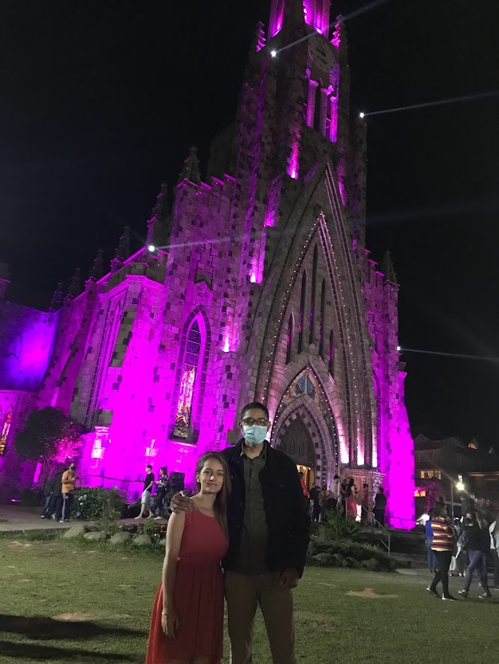

Galeria de Fotos

Acordamos cedo, e Seu José nos deixou no ponto do pedágio, deu um papelão (que fofo), tiramos foto com ele e retornou para a sua cidade para passar o natal com a sua esposa e o curica. Ao chegar no pedágio, levantamos nossa placa escrito ‘’Gramado’’, achando que conseguiríamos pegar carona rapidamente, pois os carros passavam devagar, e havia um acostamento grande para os carros pararem. Não foi o que aconteceu. O motivo se deu devido ao local não ser estratégico, pois essa rodovia não levava direto para Gramado, por ter vários desvios de rota no meio do caminho. Portanto, optamos por mudar a placa e colocar a cidade mais próxima como destino (Taquara), que não demorou muito até aparecer a próxima carona.
Mônica, 30a, enfermeira-socorrista. Nosso anjo da guarda, nos avistou desde quando chegamos no pedágio, porém, ela estava no seu plantão, e pensou na possibilidade de oferecer a carona logo após o término do plantão, caso estivéssemos por lá ainda. E foi o que aconteceu. O sonho dela era fazer medicina, mas devido à falta de recursos, não foi possível. Disse que ficaria de plantão durante o natal a partir das 17h. Informou-nos sobre a alta taxa de óbitos na rodovia, em torno de 1 a 2 óbitos por plantão. Já se acostumou com a rotina de trabalho nos períodos festivos, mas dá muito valor à família. Disse que gostaria de visitar o irmão que reside em Florianópolis (Praia dos Ingleses) há 3 anos, está planejando, mas não acha que vai conseguir ir por causa do trabalho. Tem uma filha pequena e um esposo. Quase não os vê com frequência. Torceu para que nós pudéssemos viajar com segurança e que admira nossa coragem de sair por aí mochilando. Mônica foi gentil e nos deixou na rodovia que dá direto a Gramado. Como Taquara fica próximo a Gramado e o ônibus era barato, optamos por ir até a rodoviária de Uber e comprar as passagens.
Chegando em Gramado, estávamos com fome, almoçamos em um lugar bem barato, o que é difícil encontrar nesta cidade. Recomendamos o restaurante ‘’Espetinho & BBQ’’. Após almoçarmos, procuramos um Hostel para nos acomodarmos, pois era natal e queríamos ficar bem confortáveis. A hospedagem em Gramado era bem inviável devido ao preço elevado, então optamos por ficar na cidade ao lado, em Canela. Ficamos hospedados no ‘’Canela Hostel’’, um lugar bem aconchegante e por um preço acessível. Para nos deslocarmos de uma cidade para outra (Canela - Gramado), utilizamos o ônibus coletivo. Gostamos muito mais de Canela do que de Gramado, por ser uma cidade mais tranquila e não muito turística, apesar de haver muito movimento em torno da Catedral de Pedra, devido à época do natal. O clima desta região é bem agradável, apesar de fazer muito frio à noite.